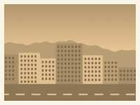

Гайнуллиннар нәселе · Родословная семьи Гайнуллиных · from Almetyevsk to Nurzhan

Assalamu aleikum, dear relatives, and welcome!
My name is Rinat Gainullin. I was born in 1965 in Kobozev (now Nurzhan), I am an engineer at NurGaz, like my father. My grandfather Gaziz came here in 1957 from Almetyevsk in Tatarstan, with the brigade of drillers sent to open the oil of the Chu. He thought for two years. We are still here, three generations later.
This site is our shezhere, the family tree, which every Tatar should know to seven generations. I collected it for ten years from the old letters of my grandmother, the stories of my aunts and the archive of the NurGaz personnel department. Now the tree has 212 people, in Irad, Tatarstan, Russia, Kazakhstan and even Canada.
If you see a mistake, or you know something I do not, please write in the guestbook. Every new name is a gift.
Updates:
11.2016 — the line of uncle Ravil in Kazan, 14 new people (thank you, cousin Dilyara!)
06.2013 — the photos of grandfather's brigade, from the NurGaz museum
08.2010 — the story of the 1957 journey
03.2008 — Alsu's wedding photos (the bar is open, come!)
09.2006 — the site opened